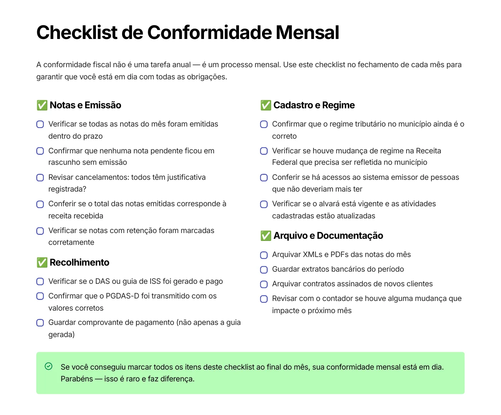
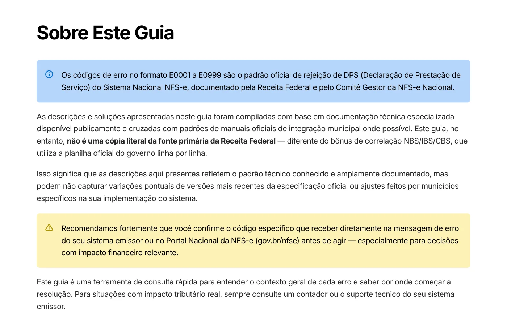
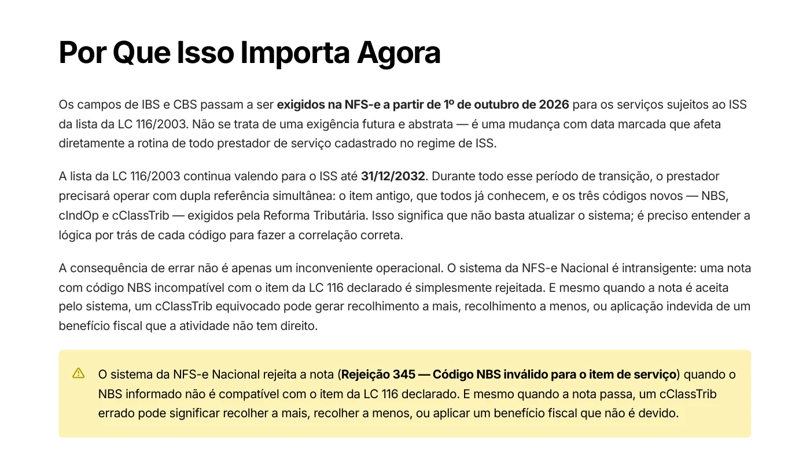

“Esse código está certo?”
Você escolhe o serviço, mas fica em dúvida se ele corresponde à atividade realizada.
Um guia prático para revisar cadastro, código do serviço, retenções e pendências, com checklist mensal para transformar a conferência em rotina.
eBook completo + 2 guias bônus incluídos
R$ 49,90 no cartão à vista ou até 5× de R$ 11
Total parcelado: R$ 55.
7 dias de garantia · Material digital
Nem sempre o erro está no valor da nota. Cadastro, código do serviço e retenções também merecem atenção. Saber o que conferir ajuda você a agir com mais clareza.
Você escolhe o serviço, mas fica em dúvida se ele corresponde à atividade realizada.
A rotina mudou. O cadastro, o enquadramento ou o regime tributário podem precisar de revisão.
Uma divergência ou uma retenção incorreta pode passar despercebida sem uma rotina de conferência.
O primeiro passo é entender o que revisar. O guia ajuda você a organizar essa conferência.
O guia reúne os pontos da rotina em uma sequência de consulta. Use o fluxo como orientação inicial e confirme as regras específicas do seu município quando necessário.
Confira os dados que identificam o prestador e a atividade.
Revise se a descrição e a classificação correspondem ao trabalho realizado.
Observe os campos relacionados aos tributos e às retenções aplicáveis.
Registre dúvidas ou divergências antes de seguir com a emissão.
Volte ao checklist mensal para não depender apenas da memória.
Fluxo educacional e inicial. A aplicação pode variar conforme o município e o caso concreto.
O guia principal reúne os cuidados com as notas fiscais. Os dois bônus complementam a consulta, sem custo adicional.
Guia prático para revisar os pontos da sua NFS-e
Entenda os cuidados da emissão e organize uma conferência mais clara para a sua rotina.
Um material de consulta para entender a relação entre essas classificações e tributos.
Orientações sobre erros na NFS-e Nacional, incluindo conteúdo para MEI e Simples Nacional.
Organize o que conferir e transforme a revisão em rotina.
Consulte os termos que você ainda não conhece.
Entenda os primeiros cuidados diante de uma pendência.
As imagens abaixo são amostras das páginas desta edição. A compra libera os arquivos digitais completos.

Cuidados práticos para revisar a emissão e um checklist mensal de conformidade.

Consulta rápida para entender códigos de rejeição da DPS e por onde começar a correção.

Guia de consulta sobre os códigos e a relação com o Anexo VIII.
Feito para quem emite NFS-e e quer compreender melhor os cuidados da rotina fiscal.
O guia não substitui a análise individual de um contador, orientação jurídica ou as regras da prefeitura responsável. As exigências podem variar entre municípios.
Consulte os cuidados, entenda as dúvidas e organize sua revisão mensal com o guia de Ivan Gonçalves.
Material digital. Não há envio de produto físico.
Um único pagamento de
R$ 49,90 no cartão à vista
ou até 5× de R$ 11 (total: R$ 55)
Pagamento no checkout HeroSpark
As instruções de acesso são exibidas pela plataforma após a confirmação.
Se o conteúdo não atender à sua expectativa, solicite o reembolso pelo canal indicado no checkout dentro do prazo de sete dias. Consulte as condições exibidas antes do pagamento.
Entenda o conteúdo, o acesso e as condições da oferta.
Guia de Ivan Gonçalves + 2 bônus · 7 dias de garantia
R$ 47 no Pix · R$ 49,90 no cartão à vista
ou 5× de R$ 11 (total: R$ 55)